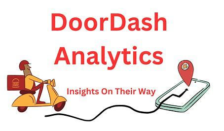

Portfolio -My past work samples
Bite-Sized News with NLP: Automatically Summarizing CNN Articles Using AI
DoorDash Delivery Time Prediction Using Machine Learning
Sentiment Analysis on Amazon Product Reviews

I’m a data analytics professional with strong experience in designing automated data pipelines, creating impactful dashboards, and solving business problems through data. My work spans across industries—from building KPI dashboards at Oracle, to improving reconciliation accuracy at Accenture, to leveraging NLP and cloud platforms at Ingram Micro.
With a passion for turning data into decisions, I aim to simplify complex problems and build scalable analytics solutions that matter.
Whether it’s streamlining operations or unlocking customer insights, I enjoy using data to drive meaningful outcomes.
I specialize in transforming raw data into actionable insights. With hands-on experience in Python, SQL, Power BI, and tools like Snowflake and AWS, I build scalable data pipelines, dashboards, and machine learning models that support business decisions. My strengths lie in data storytelling, automation, and delivering end-to-end analytics solutions that drive measurable impact.
Experienced in using Python for data cleaning, analysis, automation, and building machine learning models. Proficient with libraries like Pandas, NumPy, Scikit-learn, and Matplotlib to deliver scalable data-driven solutions.
Skilled in writing complex SQL queries for data extraction, transformation, and analysis. Experience working with large datasets, performing joins, aggregations, and optimizing queries for performance.
Experienced in building interactive dashboards and visual reports to communicate insights effectively. Skilled in data modeling, DAX calculations, and connecting multiple data sources.
I'm always open to discussing data-driven opportunities, collaborations, or new challenges. Feel free to reach out if you'd like to connect about analytics, dashboards, or anything data!
Email Me: shwetagupta271@gmail.com
Call me: +19497380672